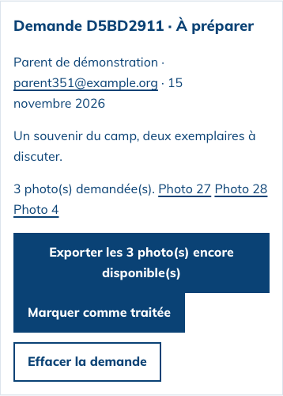

FICHE 10 · STAFF D’UNITÉ
Préparer les souvenirs
avec les familles
Les familles choisissent leurs photos ; tu prépares le souvenir avec elles.

- Ouvre Demandes des parents dans l’album. Les animateurs voient leurs sections, toi toutes les sections.
- Lis le message et les références. Exporte les photos encore disponibles pour préparer le souvenir.
- Contacte le parent pour confirmer les exemplaires, le format et les modalités. Pas d’e-mail automatique ni de paiement sur le site.
- Marquer comme traitée lance la conservation de 90 jours. Effacer la demande enlève les coordonnées, sans supprimer les photos.